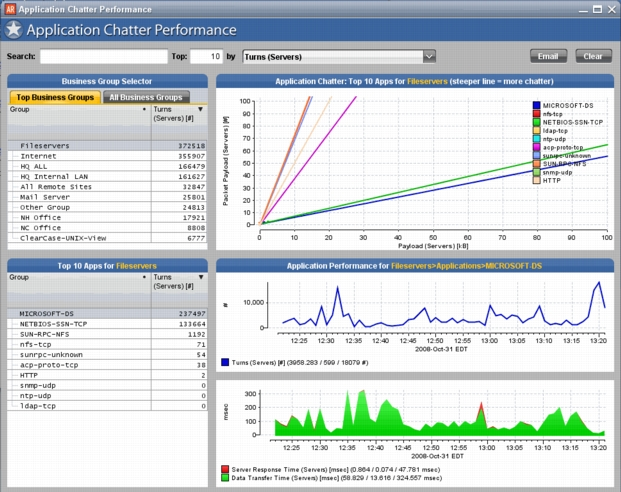
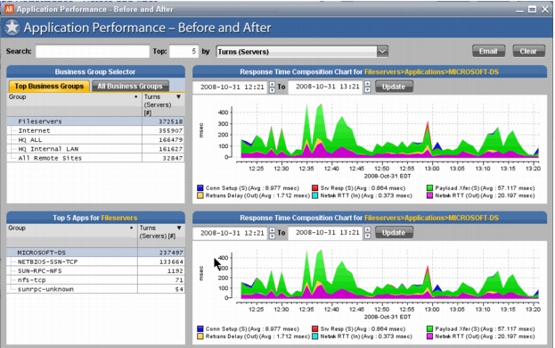
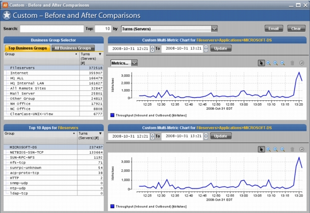
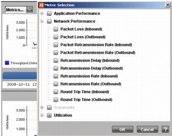

Optimization Insights Optimization Insights are designed to help you decide on the proper way to optimize application performance and compare performance before and after an installation or proof of concept. Using them you can tune, administer, and coordinate optimization projects such as WAN optimization, server optimization, and application acceleration. Optimization Insights include: Application Chatter Performance Application Performance - Before and After Custom - Before and After Comparisons Application Chatter Performance Application Chatter Performance is located in the Optimize tab. This Insight helps you identify “chatty applications” and decide what kind of optimization to try. A chatty application is one that uses many TCP turns to deliver its payload, which is easily measured by comparing Payload (average bytes per turn) to Packet Payload (the average number of packets per turn). Figure 1 Application Chatter Performance Insight  The goal is to see if the server response time and/or data transfer time are high. Next, you can apply optimization to the application or the network (whichever applies). After which you can re-run the Insight and see if the chattiness is lowered or if the server response time or the data transfer time is reduced. Procedure 1 Using the Application Chatter Performance Insight 1. Select from Top Business Groups ranked by turns or from All Business Groups (upper left). 2. Find the application with the highest packet-to-payload ratio (chattiness). Look at the correlation chart (top right) and identify the line with the steepest slope (i.e., the most inclined). This is the highest packet-to-payload ratio. 3. From the Top 10 Apps pane (lower left) select a chatty application to find out what kind of optimization might be appropriate. 4. Measure the server response time vs. data transfer time (charts on lower right). High server response time could mean need for server optimization. High data transfer time could mean the need for TCP or WAN optimization. End of Procedure 1 Application Performance - Before and After Application Performance - Before and After Insight is located in the Optimize tab. This Insight answers questions such as “How can I minimize network performance when I change my network and/or application configurations?” For example, if you make a configuration change to your network, it could affect the speed and load balancing of a certain application. You can use this Insight to compare performance before and after the change. Figure 2 Application Performance - Before and After Insight  Procedure 2 Using the Application Performance - Before and After Insight 1. From the selector pane (upper left) select the Business Group you wish to use by selecting the Top Business Groups tab or All Business Groups tab. 2. From the application pane (lower left) select the application you wish to use. By default the response time composition charts shows the current hour for the project time. You can change the time period by using the project time controls. 3. Select the time period you wish to compare by changing the project times on one or both of the charts and click Update. End of Procedure 2 Custom - Before and After Comparisons Custom - Before and After Comparisons Insight is located in the Optimize tab.This Insight is the same as Application Performance - Before and After Comparisons except that you can customize the metrics displayed in the charts. Figure 3 Custom - Before and After Comparisons Insight  Procedure 3 Using the Custom - Before and After Comparisons Insight 1. From the selector pane (upper left) select the Business Group you wish to use by selecting the Top Business Groups tab or All Business Groups tab. 2. From the application pane (lower left) select the application you wish to use. By default the time series charts shows the current hour for the project time. You can change the time period by using the project time controls. 3. Select the time period you wish to compare by changing the project times on one or both of the charts and click Update. 4. From the Metric menu at the top left of the top time series chart, select the metrics you want viewable in the charts. End of Procedure 3 Figure 4 Custom - Before and After Comparisons Metric Selection Menu 